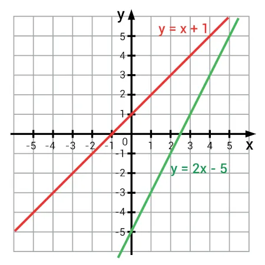
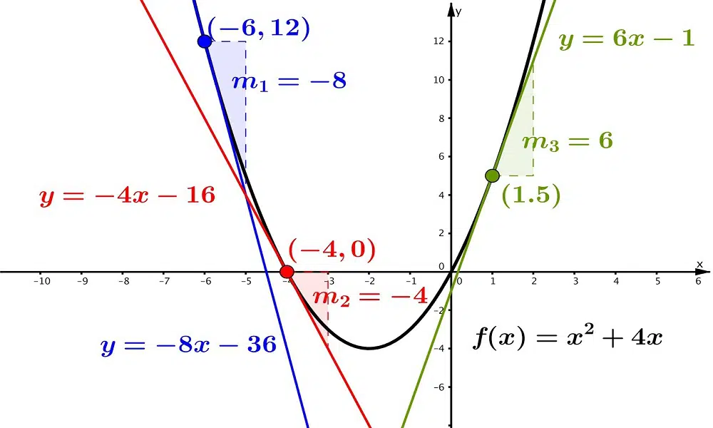
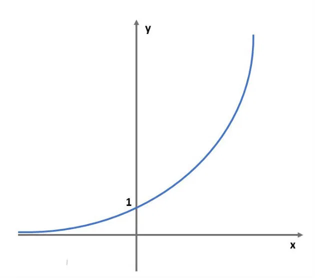
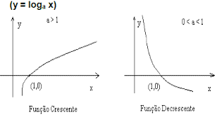
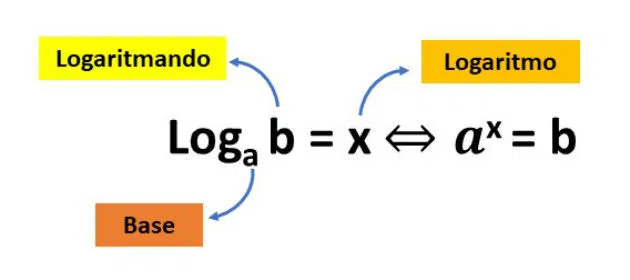

Função AfimFunção afim, também chamada de função do 1º grau, é uma função definida por:
começar estilo tamanho matemático 18px reto f parêntese esquerdo reto x parêntese direito igual a ax espaço mais espaço reto b fim do estilo
Sendo a e b números reais.
Neste tipo de função, o número a é chamado de coeficiente de x e representa a taxa de crescimento ou taxa de variação da função. O "a" determina a inclinação da reta.
Já o número b é chamado de coeficiente linear, sendo um termo constante. Ele representa o ponto de intersecção da reta com o eixo y das ordenadas.
A função afim é representada graficamente por uma reta no plano cartesiano.
Exemplos de função afim:
f(x) = x + 5, (com a = 1 e b = 5);
g(x) = 3√3x - 8, (com a =3√3 e b = -8);
h(x) = 1/2x, (com a =1/2 e b = 0);
Toda função afim possui como conjunto domínio os números reais, assim como seu contradomínio, f : ℝ→ℝ. Ainda, nas funções afins, o conjunto imagem é igual ao contradomínio.

Função QuadráticaA função quadrática, também chamada de função polinomial de 2º grau, é uma função representada pela seguinte expressão:
f(x) = ax2 + bx + c
Onde a, b e c são números reais e a ≠ 0.
Exemplo:
f(x) = 2x2 + 3x + 5,
sendo,
a = 2
b = 3
c = 5
Nesse caso, o polinômio da função quadrática é de grau 2, por ser o maior expoente da variável x.
O conjunto domínio das funções quadráticas são os números reais, assim como seu contradomínio (f dois pontos reto números reais seta para a direita reto números reais). Já o conjunto imagem depende do vértice da parábola e de sua concavidade.

Função ExponencialFunção Exponencial é aquela que a variável está no expoente e cuja base é sempre maior que zero e diferente de um.
Essas condições são necessárias para bem definir a função, pois 1 elevado a qualquer número resulta em 1. Assim, em vez de exponencial, estaríamos diante de uma função constante.
Além disso, a base não pode ser negativa, nem igual a zero, pois para alguns expoentes a função não estaria definida.
Por exemplo, a base igual a - 3 e o expoente igual a 1/2. Como no conjunto dos números reais não definimos a raiz quadrada de número negativo, isto é, não existiria imagem da função para esse valor.
Exemplos:
f(x)=4^x
g(x)=0,1^x
h(x)=2/3^x
Nos exemplos acima: 4, 0,1 e 2/3 são as bases, enquanto x é o expoente.

Função LogarítimicaA função logarítmica de base a é definida como f (x) = loga x, com a real, positivo e a ≠ 1. A função inversa da função logarítmica é a função exponencial.
O logaritmo de um número é definido como o expoente ao qual se deve elevar a base a para obter o número x, ou seja:

Exemplos:
f(x) = log2 x
g(x) = log10 x
h(x) = log1/2 x